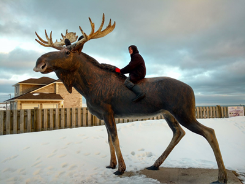
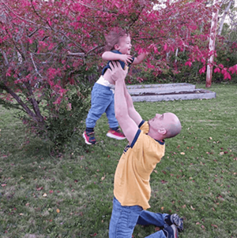

I've had a blast delving into the world of web programming! I hope to find a supportive and welcoming work environment where I'm able to learn, grow, and expand my horizons! My aspiration to work in this field is one of passionate curiosity mixed with necessity as, in order to be the best father I can be, I believe I need to reach the potential that I can see in myself. I try not to take myself too seriously, as you'll see in some of the pictures below!


I recognize that these pictures have nothing to do with web programming! THAT'S OKAY! You can find some more relevant information by using my navigation bar that I slapped onto the top of the page that I spent too much time on!